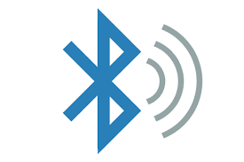

TIPOS DE CONEXIONES
Conexiones inalámbricas (wireless).
Las conexiones inalámbricas son sistemas de comunicación que permiten transmitir datos entre dispositivos sin necesidad de cables físicos. En lugar de usar conexiones por cable, utilizan ondas electromagnéticas (como las ondas de radio, infrarrojas o microondas) para enviar y recibir información a corta o larga distancia.
Este tipo de conexión ha revolucionado la forma en la que interactuamos con la tecnología, facilitando la movilidad, la flexibilidad y el acceso a internet y a otros dispositivos desde casi cualquier lugar. Hoy en día, forman parte esencial de nuestra vida diaria, estando presentes en smartphones, computadoras portátiles, televisores, impresoras, relojes inteligentes, y por supuesto, en el Internet de las Cosas
(wifi, bluetooth, 5G, etc).

Características principales
- Sin cables físicos: La información se transmite por el aire, lo que elimina la necesidad de instalaciones cableadas complejas.
- Movilidad: Los usuarios pueden desplazarse libremente dentro del área de cobertura sin perder la conexión, lo que da gran libertad de uso.
- Instalación sencilla: No requiere grandes obras ni cableado, lo que reduce costos y facilita su implementación.
- Cobertura variable: El alcance puede ser corto (como en el Bluetooth) o amplio (como en las redes 4G/5G o Wi-Fi de largo alcance).
- Velocidad y calidad variables: La velocidad de transmisión puede verse afectada por la distancia, obstáculos o interferencias con otras señales.
- Posibles interferencias: Las conexiones inalámbricas pueden ser sensibles a interferencias de otros dispositivos o barreras físicas como paredes.
- Consumo de energía: Algunas tecnologías, como el Wi-Fi o el 5G, pueden consumir más batería en dispositivos móviles.
Conexiones por cable (wired)
Las conexiones por cable, también conocidas como conexiones alámbricas, son aquellas que utilizan un medio físico como cables de cobre o fibra óptica para transmitir datos, electricidad o señales entre dispositivos. Aunque hoy en día gran parte de la tecnología se enfoca en las conexiones inalámbricas, las conexiones por cable siguen siendo esenciales en muchos entornos por su alta fiabilidad, velocidad y seguridad.
Este tipo de conexión se ha utilizado desde los inicios de la era digital y todavía es común en redes de computadoras, instalaciones industriales, telecomunicaciones y sistemas de audio y video profesionales.
Características principales
- Medio físico de transmisión: Usan cables (Ethernet, HDMI, USB, fibra óptica, etc.) para enviar datos directamente entre dispositivos.
- Alta estabilidad y fiabilidad: Son menos propensas a interferencias externas, lo que garantiza una conexión continua.
- Mayor velocidad: Suelen ofrecer velocidades superiores a muchas conexiones inalámbricas, especialmente con fibra óptica.
- Seguridad reforzada: Es más difícil interceptar una conexión por cable, lo que las hace ideales en entornos sensibles o privados.
- Menor latencia: Al haber menos interferencias, la respuesta entre dispositivos es más rápida, ideal para videojuegos, llamadas y trabajo en red.
- Movilidad limitada: Al depender de un cable físico, el usuario o el dispositivo debe permanecer cerca del punto de conexión.
- Instalación más compleja: Requiere cableado físico, lo que puede ser costoso o difícil de instalar en algunos entornos.
Conexiones de red de malla (Mesh networks)
Las conexiones de red de malla (o mesh network, en inglés) son un tipo de red de comunicaciones donde todos los dispositivos están interconectados entre sí, formando una especie de "tejido" o malla. En lugar de depender de un único punto de acceso (como en las redes tradicionales), cada nodo (dispositivo) de la red puede enviar y recibir datos, y también actuar como repetidor para transmitir la información a otros nodos.
Esto crea una red distribuida, flexible y muy resistente, ideal para situaciones en las que se necesita una cobertura amplia, estable y continua, incluso si uno de los dispositivos deja de funcionar.

Características principales
- Conectividad entre todos los nodos: Cada dispositivo puede comunicarse con varios otros, lo que permite múltiples rutas para enviar datos.
- Autorreparación: Si un nodo falla, la red encuentra automáticamente una nueva ruta para mantener la conexión activa.
- Cobertura amplia y uniforme: Al agregar más nodos, la red se expande fácilmente y mejora su alcance sin perder rendimiento.
- Alta fiabilidad: Al no depender de un único punto central, se evitan fallos generales en la red.
- Escalabilidad sencilla: Se pueden añadir nuevos dispositivos sin necesidad de reconfigurar toda la red.
- Latencia variable: Cuantos más saltos (nodos intermedios) hace la señal, mayor puede ser la latencia, aunque suele ser mínima en redes bien diseñadas.